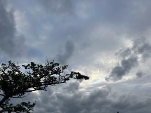

うるがいの話 ある日
最新: SDGs【うるがいの話 ある日】とは 一日だけのプログです
『うるがいの話』の最新一日だけのプログで、通信料が少なく経済的だ。カニの画像をクリックすると全ての日付が載る『うるがいの話』サイトを表示します
|
|
【うるがいの話】 うるがい(ｳﾙｶﾞｲ urugai)とは、『もずくがに』の名前でとても大きくなります。 |
|---|---|
|
|
【カミマヤーの話】 猫のことを方言でマヤーといいます。カミマヤー（kamimayaa）とは、神の猫のことです。 |
|
【たながぁの音楽】 たながぁ（ﾀﾅｶﾞｰ tanagaa）とは手長えびのことで、何種類かあり大きいのは車 エビぐらいになります。 |

|
【ぶながぁの話】 ぶながぁ(ﾌﾞﾅｶﾞｰ bunagaa)とは、赤い髪の毛、赤い身体、そして身長は１ｍ２０ｃｍ ぐらい、川の蟹を食べているの目撃された。場所は沖縄県国頭郡大宜味村のと ある村僕の隣近所に住んでいる爺さんから、聞いた話です。 |
|
|
【ギーマの話】 ギーマ(giima)とは、山原の里山に咲くスズランに似た、 花を付けます。実は食べられます、 気が付くと口の周りが紫になっています。 |
2023年11月17日 (金）SDGs
16:45

家には、子供が使っていた２０１０年夏モデルＷｉｎｄｏｗｓ７（３２ビット
、ただし６４ビットも可能）のノート１号とコドモが使っていた２０１２年秋
冬モデルＷｉｎｄｏｗｓ８（６４ビット）のノート２号がある。いずれも２０
１８年頃にＷｉｎｄｏｗｓ１０に変えた。そしてノート１号は、ヨメが日常的
に利用していた。
ところが、７月頃、画面が時々壊れる症状が出て来たのでノート２号に交替し
て使った。
そして、９月１９日にノート２号のキーボードがおかしく、使えなくなった。
密かに、ノート１号はパソコンの状態を購入時（工場出荷時）の状態に戻す作
業を行い、ついでに６４ビットへ変更、その後Ｗｉｎｄｏｗｓ１１（２１Ｈ２
）に変えて置いていた。この最適化したノート１号を使ってもらう。
そして、別の部屋でもノートパソコンを使いたいと言われる。
さて、キーボードが壊れた、ノート２号をどうするか・・・。とりあえず、リ
フレッシュ、その後Ｗｉｎｄｏｗｓ１１（２２Ｈ２）に変えたが、キーボード
がおかしいので使い物にならない。フーム、どうしたらいいのだろう。
『勝手に連打されるノートパソコンのキーボードを無効化して外付けに変更す
る手順と方法』を発見、レジストリを変更して対応する。外付けのキーボード
だが、快適だ。ヨメも２台使うことになった。
ノートパソコンは、いずれもＷｉｎｄｏｗｓ１１非対応パソコンなのに。オタ
クだ。（※ノートパソコンは、昔にメモリの増設とＳＳＤへの変更済）
昨日の雨で、屋上防水工事は中止になる。その代わりではないが、水道の直結
の工事を、オジーがパッパッと４０分程で終える。なんと、水の勢いが２倍以
上になった。これで断水のリスク回避が出来なくなった。
１６時４１分 ビットコインの総資産 ￥１５、８４５（↓５６３）